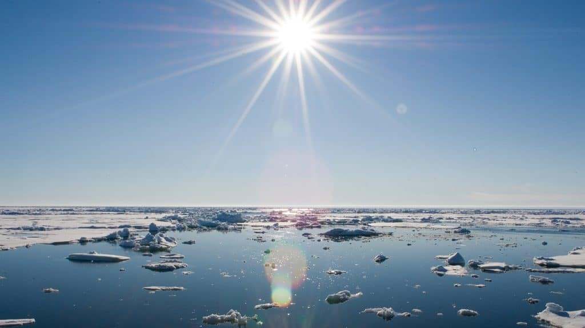
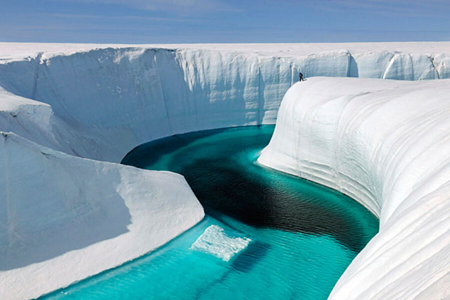

This graph, based on the comparison of atmospheric samples
contained in ancient ice cores and more recent direct
measurements, provides evidence that atmospheric CO2 has
increased dramatically since the Industrial Revolution
compared to paleoclimatologic (past climate) measurements
over the past 800,000 years. (Credit: Luthi, D., et al.. 2008;
Etheridge, D.M., et al. 2010; Vostok ice core data/J.R.
Petit et al.; NOAA Mauna Loa CO2 record.
Earth's climate has changed throughout history. Just in the last
650,000 years there have been seven cycles of glacial advance
and retreat, with the abrupt end of the last ice age about 11,700
years ago marking the beginning of the modern climate era — and of
human civilization. Most of these climate changes are attributed to
very small variations in Earth’s orbit that change the amount of
solar energy our planet receives.
Scientific evidence for warming of the climate system is unequivocal.
- Intergovernmental Panel on Climate Change
The current warming trend is of particular significance because
it is unequivocally the result of human activity since the
mid-20th century and proceeding at a rate that is unprecedented
over millennia.1 It is undeniable that human activities have
warmed the atmosphere, ocean, and land and that widespread
and rapid changes in the atmosphere, ocean, cryosphere, and
biosphere have occurred.
Earth-orbiting satellites and other technological advances
have enabled scientists to see the big picture, collecting
many different types of information about our planet and its
climate on a global scale. This body of data, collected over
many years, reveals the signals of a changing climate.
The heat-trapping nature of carbon dioxide and other gases
was demonstrated in the mid-19th century.2 Their ability to
affect the transfer of infrared energy through the atmosphere
is the scientific basis of many instruments flown by NASA.
There is no question that increased levels of greenhouse gases
must cause Earth to warm in response.
Ice cores drawn from Greenland, Antarctica, and tropical
mountain glaciers show that Earth’s climate responds to changes
in greenhouse gas levels. Ancient evidence can also be found in tree
rings, ocean sediments, coral reefs, and layers of sedimentary
rocks. This ancient, or paleoclimate, evidence reveals that current
warming is occurring roughly ten times faster than the average
rate of ice-age-recovery warming. Carbon dioxide from human activity
is increasing more than 250 times faster than it did from natural
sources after the last Ice Age.
The evidence for rapid climate change is compelling:
Global Temperature Rise
The planet's average surface temperature has risen about 2
degrees Fahrenheit (1 degrees Celsius) since the late 19th century,
a change driven largely by increased carbon dioxide emissions into the
atmosphere and other human activities.4 Most of the warming occurred
in the past 40 years, with the seven most recent years being the
warmest. The years 2016 and 2020 are tied for the warmest year on record.
Warming Ocean

The ocean has absorbed much of this increased heat, with the
top 100 meters (about 328 feet) of ocean showing warming of more
than 0.6 degrees Fahrenheit (0.33 degrees Celsius) since 1969.6
Earth stores 90% of the extra energy in the ocean.
Shrinking Ice Sheets

The Greenland and Antarctic ice sheets have decreased
in mass. Data from NASA's Gravity Recovery and Climate
Experiment show Greenland lost an average of 279 billion
tons of ice per year between 1993 and 2019, while
Antarctica lost about 148 billion tons of ice per year.7